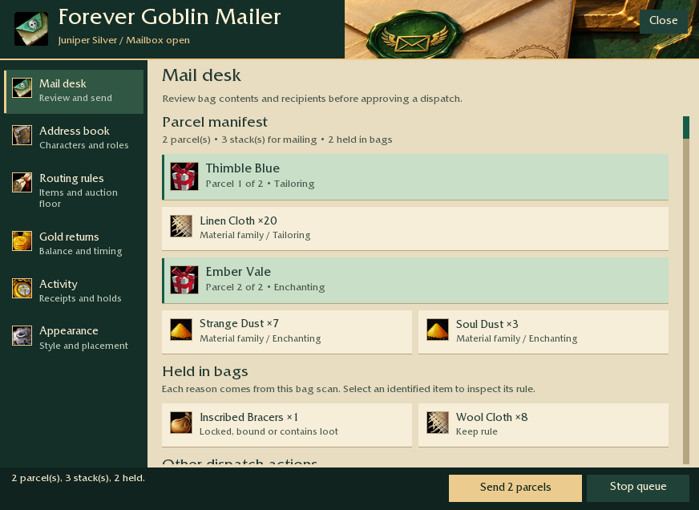
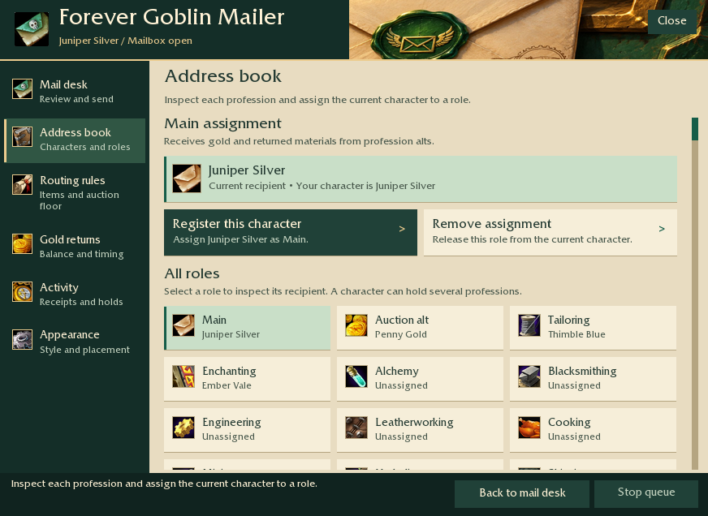
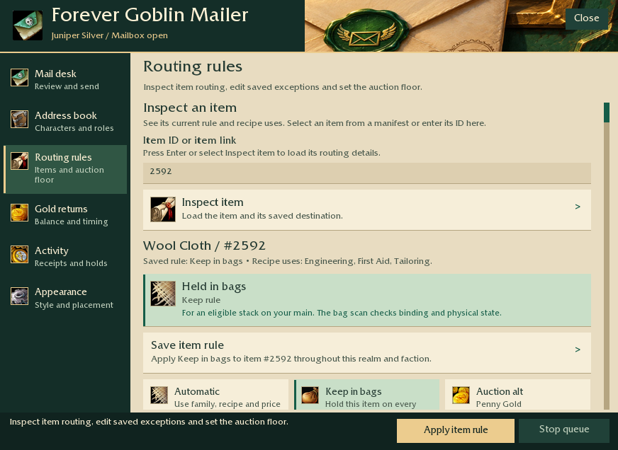
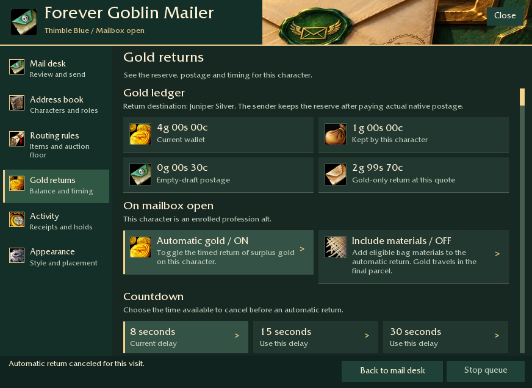
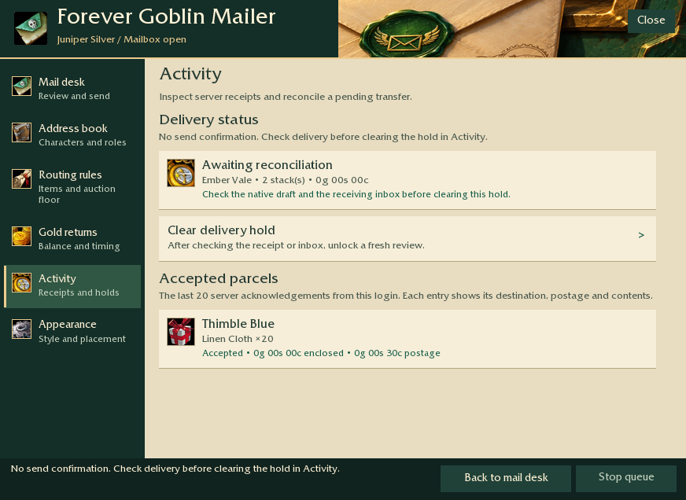
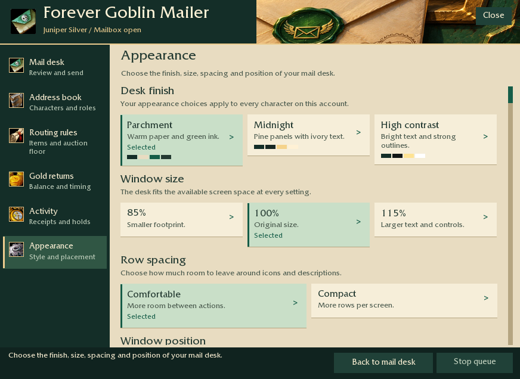

The sorting desk
Follow 589 ingredient IDs through profession recipes and material families. Set an item-specific destination for shared supplies.
How routing works →World of Warcraft Forever
Cloth to the tailor. Dust to the enchanter. One visit to the mailbox sorts the haul and brings your alt’s spare gold home.
v2.0.0 preview 2 · Forever 1.60.1 · Interface 16001
With WoW closed, extract ForeverGoblinMailer into _forever_/Interface/AddOns/. Disable the old Forever Mail Fix if installed.
Type /fgm on each character. Select Main, Auction alt, or a profession. Choose Register this character, then Confirm assignment.
On your main, open a mailbox and select Route my bags. Check the recipients and click the gold Send button showing the parcel count.
Explore the six pages before your first delivery. Each example comes from the addon’s Lua interface with sample characters and bags.






Gold returns
Each enrolled profession alt can return its surplus after a configurable 8, 15 or 30 seconds at the mailbox. Include materials to put the gold in the final parcel, after all postage.
Try a sample balance, postage and reserve. The addon reads the wallet and postage from the game and uses the reserve you set. This calculator runs in your browser.
Follow 589 ingredient IDs through profession recipes and material families. Set an item-specific destination for shared supplies.
How routing works →Use explicit auction rules or a cached Auctionator quote. Set the per-unit floor and inspect the stock before dispatch.
Configure your routes →Match the release checksum and inspect the Lua. Native delivery, secure prompts and wallet balances have a public acceptance checklist.
Verify your download →